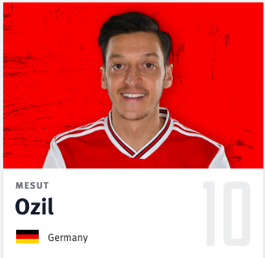
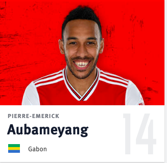
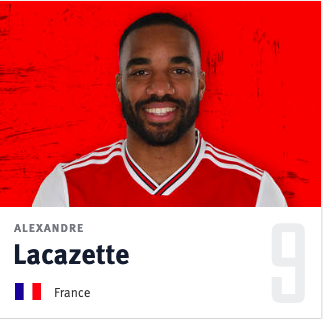

Arsenal

Top players of Arsenal
Mesut Ozil
(Born 15 October 1988) is a German professional footballer who plays for Premier League club Arsenal as an attacking midfielder, but can also be deployed as a winger. He is renowned for his technical skills and creativity; due to his agility, finesse and versatility as an attacking midfielder.
Pierre-Emerick Aubameyang
(Born 18 June 1989) is a professional footballer who plays as a forward and is the captain of both English Premier League club Arsenal and the Gabon national team. He is considered to be one of the best strikers in the world, known for his pace, finishing, and off-ball movement. Aubameyang plays mainly as a striker, but has also been deployed as a wide forward.
David Luiz

(Born 22 April 1987) is a Brazilian footballer who plays for Premier League club Arsenal and the Brazil national team. Primarily a centre back, he can also be deployed as a defensive midfielder.
Alexandre Lacazette
(Born 28 May 1991) is a French professional footballer who plays as a forward for Premier League club Arsenal and the France national team. He is known for his pace, hold-up play, and work-rate. Lacazette plays mainly as a striker, but has also been deployed as a second striker, and wide forward.